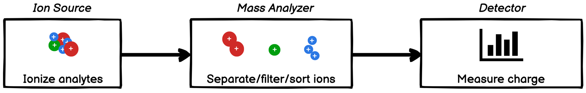
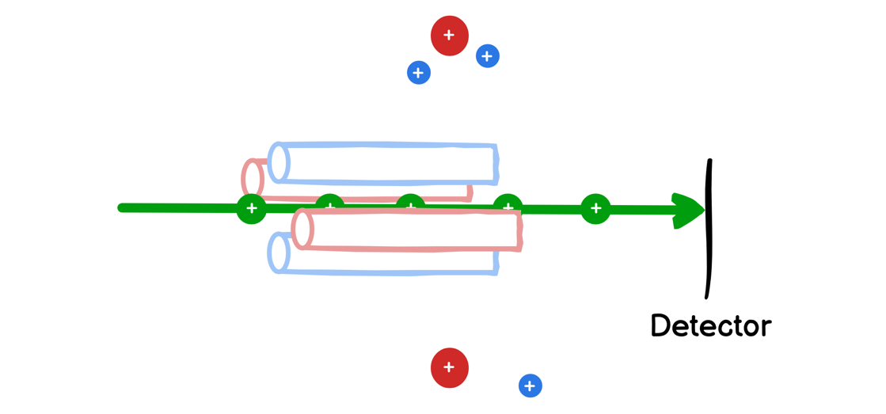
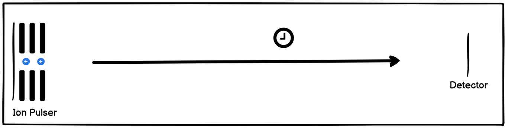
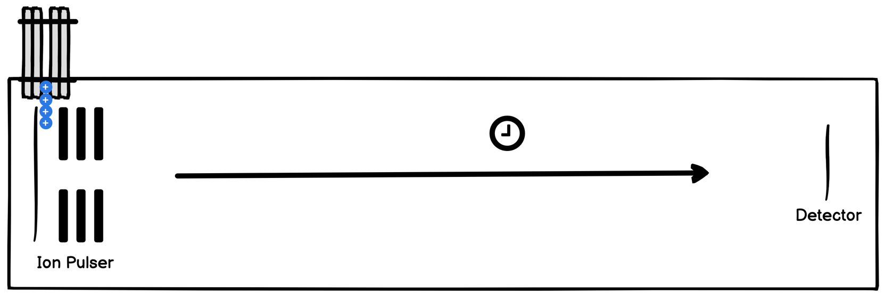
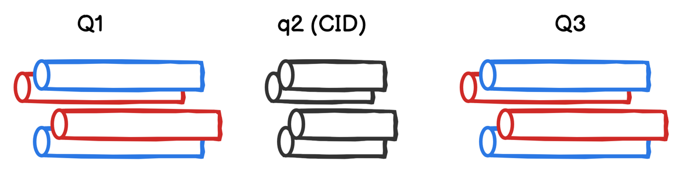
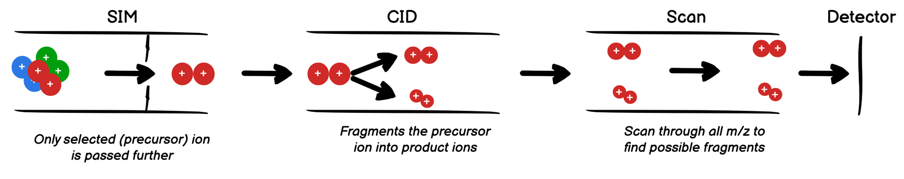
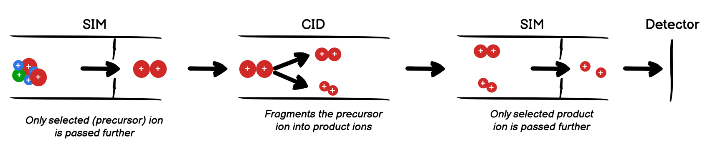

Mass Spectrometry: types, modes, data processing
Components of Mass Spectrometers
Mass Analyzer - the part which separates/sorts the ions. This determines the type of mass spectrometer e.g. Quadrupoles, Time-of-Flights, Orbitraps - they all differ in mass analyzers.
Ion Source is responsible for ionizing the analytes. The most used ion source in mass spectrometry is ESI (electro-spray ionization). Some of the sources are used only with specific Mass Analyzers: for instance MALDI (matrix-assisted laser desorption/ionization) is specific to TOF.
Detector is the part that senses the ions that were passed by Mass Analyzer. Some of the detectors are coupled with Mass Analyzers - e.g. Orbitrap is both a Mass Analyzer and a Detector. Note Mass Spectrometer itself may also be called a "detector" when considered as a whole.
Mass Analyzers
Quadrupoles, SQD
Quadrupoles (Single Quadrupole Detector in particular) are low-resolution mass analyzers. There are 2 sets of rods: one pair is on horizontal and one pair - on vertical axis. Voltages is applied to both pairs. It changes with different frequency so that one of the axes resonates with ions of m/z bigger than the one we're interested in, the other axis filters out ions of smaller m/z. Thus only the ions of the right m/z are passed through, while the rest are filtered out:
When in Scan mode - the m/z of interest changes gradually from lower to the upper boundary, measuring this way different ions at different time. When in SIM mode - only one m/z is passed and the rest of them are filtered out; though it's possible to set up quadrupoles to switch between multiple specific masses.
Quadrupole can also work in so called RF-only mode (RF - radio frequency). In this case it doesn't filter out any ions - all of the masses are passed through. This may be useful if quadrupole is used for other purposes than analyzing masses: e.g. as a collision cell or an as an interface before other mass analyzers.
TOF (Time-of-Flight)
TOF is a particle accelerator which then measures how quickly the analytes reach the detector. Small ions reach the detector faster than the big ions. By measuring time of arrival we can tell the mass of the arrived particle. TOF is considered a High Resolution Mass Spectrometer (HRMS) - it can tell apart ions with very small differences in mass compared to Quadrupoles.
Because TOF is an HRMS it requires special care to designing its parts. In rest state ions don't actually stay still - they move around with different velocity according to Boltzmann distribution. Because of how sensitive TOF is - these initial differences in ions will have an impact on the eventual mass resolution:

This puts constraints on how ion source is designed - you can't just trap ions after ESI because they will have large differences in initial kinetic energy. For these reasons other types of ionization is used.
MALDI
MALDI represents a plate with dried down sample - the laser is used to ionize the analytes in this case. This, along with Delayed Extraction keeps the ions close together and improves the resolution of the instrument. Such combination of components is called MALDI-TOF or MTOF.
Nice thing about MALDI is it allows for High-Throughput Analysis - several seconds is enough to analyze hundreds of samples. But the drawbacks - it's not compatible with chromatography. So in the end you end up with just 1 spectrum instead of a chromatogram. This makes it impractical for most samples in pharma as this leads to ion suppression - which decreases sensitivity of the instrument.
oa-TOF
Orthogonal Acceleration TOF allows more diverse ion sources. E.g. in case of a hybrid of like Quadrupole-TOF (QTOF) this enables combining chromatography with TOF. In this scenario Quadrupole ensures the ions are focused in space. Then they get introduced in TOF ion accelerator, reflected via orthogonal accelerator and then continue as usual TOF:
MS/MS, MS2, MSn
Tandem MS means there are more than 1 mass analyzer separated either in space (there are 2+ physical devices) or separated in time (analytes go in circles and are processed by the same set of devices multiple times).
QqQ - Triple Quadrupole MS
This is a type of Tandem MS which has 2 quadrupole mass analyzers and yet another quadrupole in between which passes all ions through:
Modes of Mass Spectrometers
Scan Mode
Determines the presence of analytes in the range of m/z. E.g. we could scan from 100m/z to 1000m/z - all ions in this range will be determine. Some mass analyzers like quadrupoles will sequentially look for 100m/z, then go to 101m/z and so on till the end of range. Of course the granularity of the scan will be specific to a particular instrument and its settings.
This mode is used when we need qualitative information about our sample - which m/z are present. It could also be used for quantitative experiments, but because it dwells on a single m/z for a very short period of time it's not as sensitive as SIM mode.
SIM - Single Ion Monitoring
Unlike Scan Mode when scientists set up Mass Spectrometer in SIM mode they already know which m/z to look for. The instrument will look for the specified m/z instead scanning through all possible values - this allows the detector to dwell on configured m/z longer, reducing signal-to-noise ratio and allowing for better quantification.
Tandem MS modes
Most of the workflows use 2 mass analyzers and a collision cell in between. Mass analyzers could work either in SIM or in Scan modes depending on the specific need. Ions flowing out of the 1st Mass Analyzer are called Precursors (aka parent ion). Fragment ions coming out of the collision cell are called Product Ions (aka daughter ion).
Collision Cell is used for Collision Induced Dissociation (CID) - in order to fragment the ions. This is important because it allows to receive a qualitative information about the precursor (whether it's actually our ion or something else with similar m/z), or to distinguish 2 isobaric precursors during quantification.
Product Ion Scan
Is about analyzing the fragmentation patterns of the selected precursor ion. Often is done before going to SRM to understand which of the fragments are possible, how they differ from fragments of other precursors and which fragment gives the highest signal intensity (for further quantification).
Since 2nd mass analyzer works in Scan Mode we get a whole spectrum of m/z every N millisec, but for each of the spectrum we also record the precursor m/z.
SRM - Selected Reaction Monitoring
Also known as MRM (Multiple Reaction Monitoring) - a mode when both of the mass analyzers work in SIM mode. Important for quantification of an analyte in a complex mixture. The 1st detector needs to be in SIM mode because multiple different precursors could potentially be dissociated into same fragments. Also there could be isobaric species either in the original mixture or in the fragments from different precursors.
Data-dependent acquisition (DDA)
Before selecting ion transitions for SRM we need to determine the precursor ions and the fragments they are split into. It's possible to first run a Scan, then for each of the ion we're interested in, we can run additional Product Ion Scan. But this is very time consuming. DDA solves this problem by allowing you to run a typical SQD Scan Mode and once high intensities of m/z are detected - automatically switch into another mode (e.g. Product Ion Scan).
This allows for a much faster method development. E.g. if you're looking for 3 precursors - you'd have to run a Scan Mode and 3 Product Ion Scans to gather all the necessary information for the future SRMs. With DDA it's just a single run. Once a high level of signal is reached - the instrument will check all high m/z's detected.
Types of chromatograms in Peaksel
Peaksel uses prefixes to differentiate between different types of
detector modes and chromatograms. Full chromatogram name consists of
DETECTOR-IONIZATION-CHROMATOGRAM sequence.
Detector prefixes
-
MS SQD- either SQD or Tandem MS used as SQD (one of the analyzer just passes through all ions) MS SRM- SRM-
MS ProductScan- Product Ion Scan -
MS QTOF- Product Ion Scan where 1st analyzer is a Quadrupole and the last one is TOF.
Ionization
ES+orES-- Electro-Spray IonizationCI+orCI-- Chemical Ionization-
EI+orEI-- Electron Impact Ionization